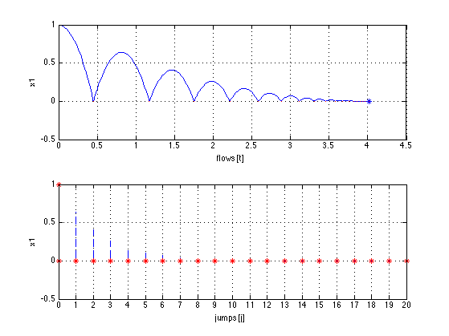
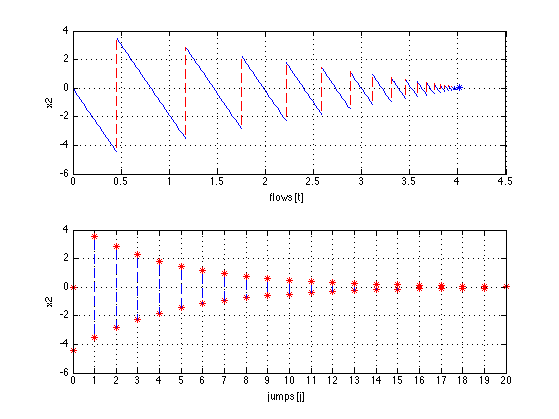

Contents
Example: Bouncing ball with Lite HyEQ Solver
Consider the hybrid system model for the bouncing ball with data given in Example 1.2. For this example, we consider the ball to be bouncing on a floor at zero height. The constants for the bouncing ball system are  and . The following procedure is used to simulate this example in the Lite HyEQ Solver:
and . The following procedure is used to simulate this example in the Lite HyEQ Solver:
- Inside the MATLAB script run_ex1_2.m, initial conditions, simulation horizons, a rule for jumps, ode solver options, and a step size coefficient are defined. The function HyEQsolver.m is called in order to run the simulation, and a script for plotting solutions is included.
- Then the MATLAB functions f_ex1_2.m, C_ex1_2.m, g_ex1_2.m, D_ex1_2.m are edited according to the data given below.
- Finally, the simulation is run by clicking the run button in run_ex1_2.m or by calling run_ex1_2.m in the MATLAB command window.
For further information, type in the command window:
helpview(['Example_1_2.html']);
Define initial conditions
x1_0 = 1; x2_0 = 0; x0 = [x1_0; x2_0];
Set simulation horizon
TSPAN = [0 10]; JSPAN = [0 20];
Set rule for jumps and ODE solver options
rule = 1 -> priority for jumps
rule = 2 -> priority for flows
set the maximum step length. At each run of the integrator the option 'MaxStep' is set to (time length of last integration)*maxStepCoefficient. Default value = 0.1
rule = 1; options = odeset('RelTol',1e-6,'MaxStep',.1); maxStepCoefficient = 0.1;
Simulate using the HyEQSolver script
Given the matlab functions that models the flow map, jump map, flow set and jump set (f_ex1_2, g_ex1_2, C_ex1_2, and D_ex1_2 respectively)
[t j x] = HyEQsolver( @f_ex1_2,@g_ex1_2,@C_ex1_2,@D_ex1_2,...
x0,TSPAN,JSPAN,rule,options);
Completed: 40% Done
plot solution
figure(1) % position clf subplot(2,1,1),plotflows(t,j,x(:,1)) grid on ylabel('x1') subplot(2,1,2),plotjumps(t,j,x(:,1)) grid on ylabel('x1') figure(2) % velocity clf subplot(2,1,1),plotflows(t,j,x(:,2)) grid on ylabel('x2') subplot(2,1,2),plotjumps(t,j,x(:,2)) grid on ylabel('x2') % plot hybrid arc plotHybridArc(t,j,x) xlabel('j') ylabel('t') zlabel('x1') 